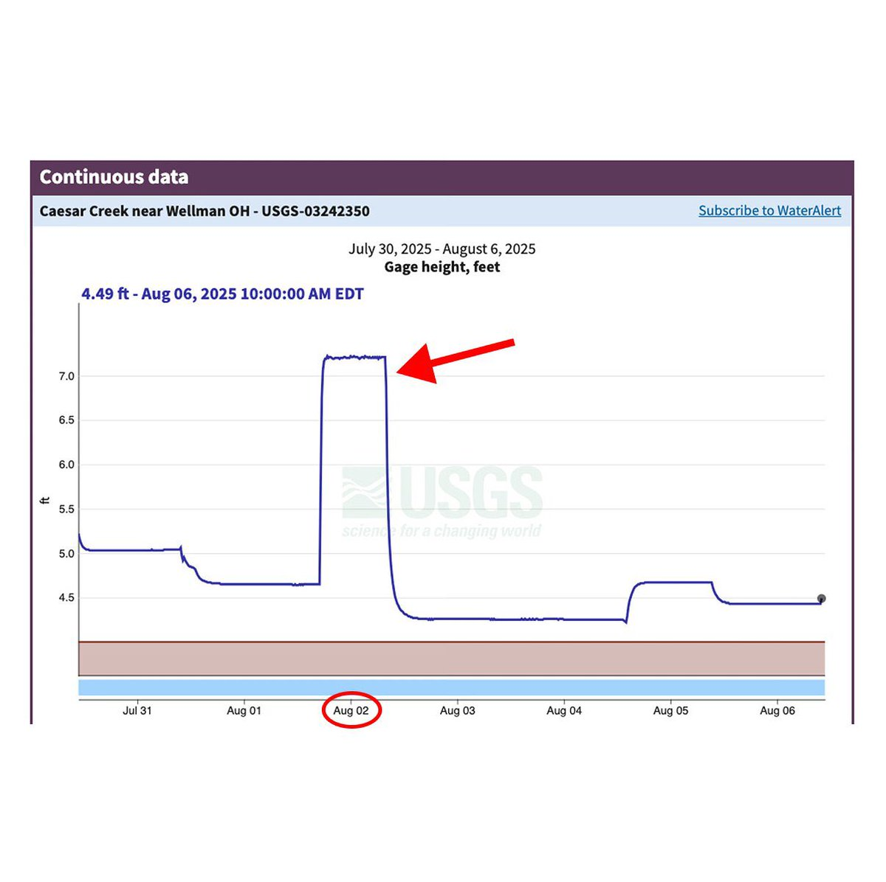

孙悟元
@wuyuandev
@koiiok17 @grok 评估大概要多少成本

川和 koi iok ！👊🇺🇸🔥 🇺🇦境外爱❤️习❤️🇨🇳势力
@koiiok17
一个非常逆天的新闻
根据卫报报道
万斯和家人在俄亥俄州度过了自己41岁生日。
为了享受他的这个生日，万斯竟然命令美国陆军工程兵团以各种方法，把俄亥俄州的湖泊水位非自然拉升，来和家人来一场划船旅行
工程兵团回应，此举是应特勤局要求，为了让副总统能安全在河流滑行独木舟
牛逼
这不比中共牛逼吗 https://t.co/VJN5YPsMFN